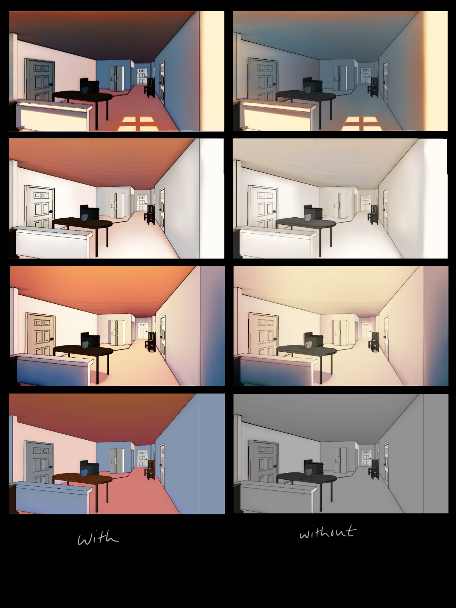
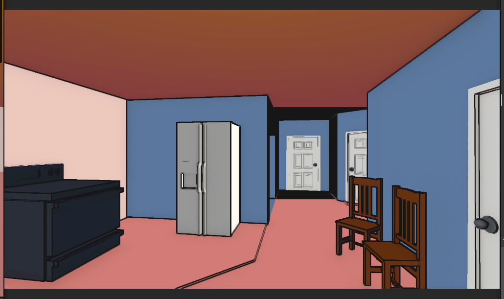
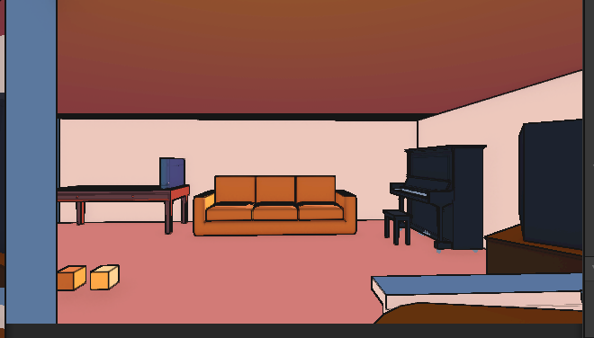
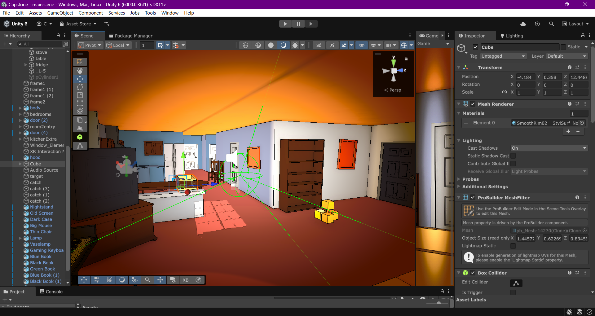
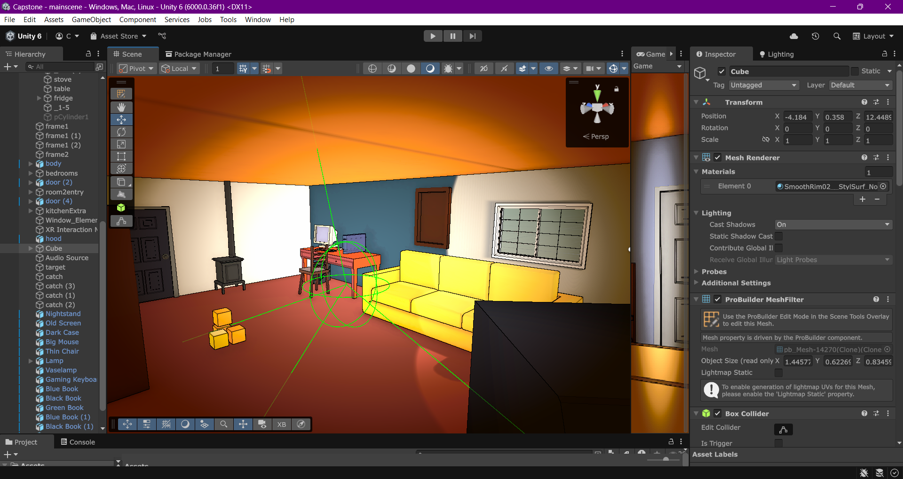
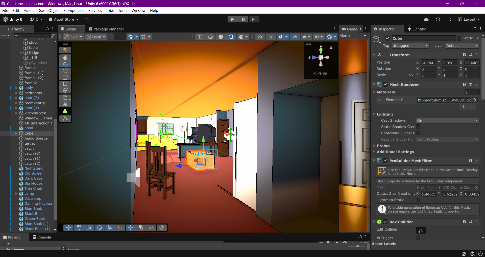
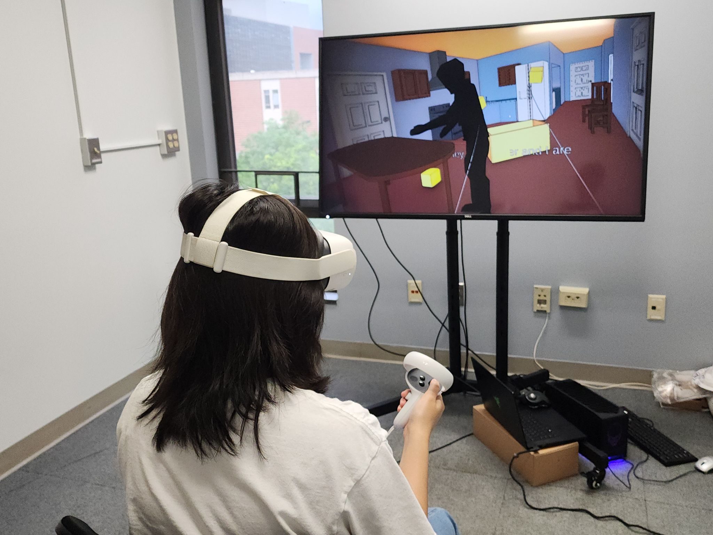

Selected project
Unity capstone development
A physics demo created in Unity for a class project later became the foundation for a larger VR capstone. After forming a team, the visual direction changed substantially. The portfolio documents early lighting and color mockups, development in Unity, behind-the-scenes scene work, and a presentation-day visitor playing through the experience.






